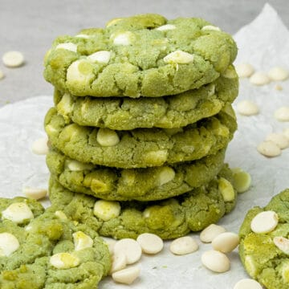

Matcha cookies

White Chocolate Matcha cookies made with matcha powder (Japanese green tea) and white chocolate chips are the ultimate chewy, gooey, and buttery cookies for matcha tea fans, in fact, they can easily turn matcha haters into matcha lovers!
Ingredients
- 25 g (½ cups) Unsalted butter room temp
- 1 Egg
- 180 g (1½ cups) All purpose flour
- ½ teaspoon Salt
- ½ teaspoon Baking soda
- ½ teaspoon Baking powder
- 4 teaspoon Matcha powder
- 150 g (⅔ cups) Callebaut WhiteChocolate (callets)
Instructions
- With an electric hand mixer whip room temperature butter with sugar for a few minutes
- Mix in the egg, just until combined
- Sift in flour, matcha powder, salt, baking powder and baking soda, fold with Rubber spatula
- Fold in white chocolate chips. Leave some for later so you can place more chocolate chips on the half baked cookies
- Prepare 2 baking pans with parchment. I recommend baking 5 cookies at once.
- Divide the dough into 10 equal balls (using a Digital scale is handy) and place them onto the parchment papers leaving enough space between them to spread. Do not soften the surface of the balls, in fact, try to keep them as rough as possible for a nice, crackly surface.
- Let the cookie dough rest in the fridge for an hour. Pre-heat oven to 175 C / 347°F
- After 1h chilling time, bake the cookies for 15 minutes in the following way: Bake for 10 minutes then place more chocolate chips on top, then bake them for further 5 minutes.
- Apply the pan banging and circular trick with the cookie-cutter, if desired. See tips above.
- Let the cookies rest for a few minutes, then carefully remove them from the parchment and let them cool on a Cooling rack.
- Serve them while they are slightly warm. The Cookies will further set as they cool. Store at room temp for a few days in air-tight jar